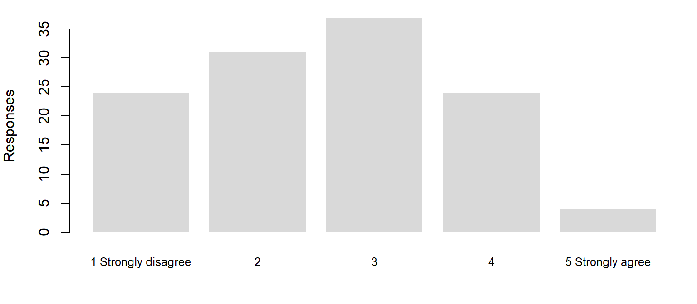
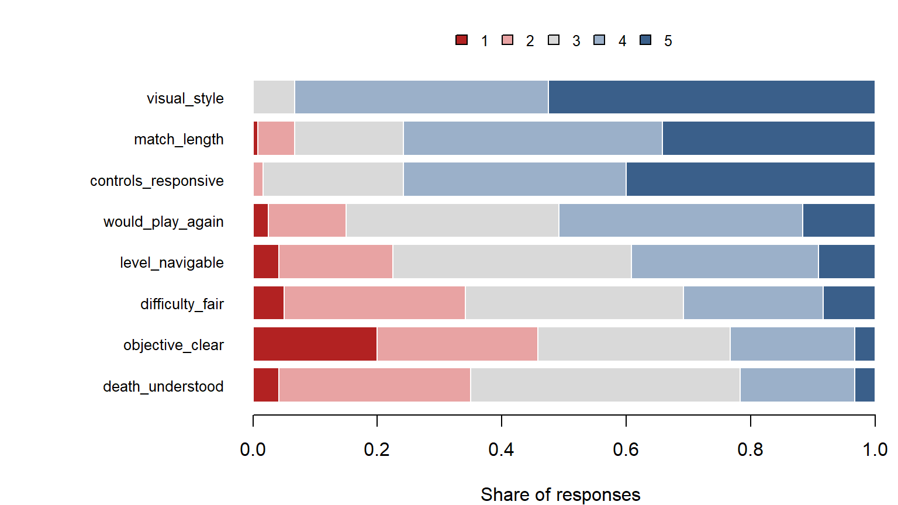

| session_id | player_id | cohort | build | deaths | session_minutes | quit_reason |
|---|---|---|---|---|---|---|
| S001 | P01 | Regular | A | 4 | 12.9 | Frustrated |
| S002 | P02 | Veteran | B | 2 | 24.6 | Lost interest |
| S003 | P03 | Regular | A | 2 | 12.5 | Frustrated |
| S004 | P04 | Novice | B | 4 | 18.8 | Lost interest |
Data, Variables and Types
What kind of number are you holding?
Before you can summarise a column you have to know what kind of thing is in it. This page sorts every variable you will meet into one of four types, shows what each type lets you do, and explains why R cannot make that decision for you. The playtest question running through it: “The objective item averages 2.6 out of 5. Is that a finding?”
Stage: 1 · Core. Time: 30 minutes in class; 15 more for the Going further sections. Before this: R from First Principles. Key terms: observation, variable, tidy data, nominal, ordinal, discrete, continuous, binary, Likert item, self-report, sample, population. R you will write: class(), count(), mean() on a logical column.
Learning Outcomes
By the end of these notes you can:
- say what one row and one column of a playtest table represent, and name the unit of observation;
- recognise a tidy table, and explain why a survey export usually is not one;
- classify any variable as nominal, ordinal, discrete or continuous, and say which summaries each type allows;
- explain the difference between the type a variable is and the type R stores it as, and name the common traps;
- choose a defensible summary for a rating-scale item, and say what assumption a mean of ratings makes;
- distinguish a sample from a population, and say why recruitment matters.
Why This Matters for Playtesting
R will compute the mean of anything that is stored as a number. Player IDs, difficulty settings, survey ratings, the build number: if it is a number in the file, mean() returns an answer, and the answer looks exactly as authoritative whether it means something or not.
The type of a variable decides which questions you can ask of it. You can count quit reasons but not average them. You can put difficulty settings in order but not say that Hard is twice Normal. You can say one session had twice as many deaths as another. None of these rules is enforced by R. They are enforced by you, and getting them wrong produces numbers that survive all the way into a design meeting (rule 3).
Observations and Variables
A data table has two directions, and each has a name.
An observation is one unit you measured: one row. A variable is one thing you recorded about every observation: one column. A value is a single cell.
In tidebreak_sessions.csv there are 120 observations and 26 variables. Each observation is one player in one session. That is the file’s unit of observation, and it is worth stating out loud, because it is not the same as “one player”: the 120 sessions come from 30 players, 4 sessions each.
Every file has its own unit. The other Tidebreak files record different things, and mixing them up is how analyses end up counting the wrong thing:
| File | One row is | Rows |
|---|---|---|
tidebreak_sessions.csv |
one player in one session | 120 |
tidebreak_survey.csv |
one player’s survey after one session | 120 |
tidebreak_paired.csv |
one player who played both builds | 30 |
tidebreak_frame_times.csv |
one rendered frame | 9,000 |
In a report you would write: “120 sessions from 30 players”, never just “120 players”.
Tidy Data
Data arrives in whatever shape the tool that produced it happened to use. Almost every analysis tool, R included, assumes one particular shape, and it has a name.
A table is tidy when:
- each row is one observation;
- each column is one variable;
- each cell holds one value.
The sessions file is tidy. The survey file is not, quite, and the way it fails is the most common failure there is. Here are its first three rows:
| session_id | controls_responsive | objective_clear | difficulty_fair | level_navigable | death_understood | visual_style | would_play_again | match_length |
|---|---|---|---|---|---|---|---|---|
| S001 | 3 | 1 | 3 | 1 | 3 | 5 | 4 | 4 |
| S002 | 4 | 4 | 3 | 4 | 2 | 5 | 4 | 4 |
| S003 | 3 | 1 | 2 | 4 | 4 | 4 | 5 | 5 |
The eight question columns look like eight variables, but they are really values of one variable, “which question”, spread across the column headings. That is convenient for reading and awkward for analysis: to ask “which question was rated lowest?” you have to handle eight columns separately.
The tidy version has one row per session per question:
| session_id | item | rating |
|---|---|---|
| S001 | controls_responsive | 3 |
| S001 | objective_clear | 1 |
| S001 | difficulty_fair | 3 |
| S001 | level_navigable | 1 |
| S001 | death_understood | 3 |
| S001 | visual_style | 5 |
| S001 | would_play_again | 4 |
| S001 | match_length | 4 |
| S002 | controls_responsive | 4 |
| S002 | objective_clear | 4 |
Now “item” is a column you can group by, filter on and plot by, and the whole survey can be summarised in one operation. Turning wide into long is called reshaping. For now, you only need to recognise when a table is wide. You will reshape one with pivot_longer() in Stage 4, when you put a whole survey into your report.
Quick check. A telemetry export has columns player_id, deaths_level1, deaths_level2, deaths_level3. Is it tidy? What would the tidy version’s columns be?
For your project: before your first playtest, decide what one row of each file your game writes will be. One row per death? Per session? Per player? Write it at the top of the logging code. Every analysis you do later depends on it.
Types of Data
Every variable is one of two kinds, and each kind splits in two.
Categorical variables have values that are labels. Numerical variables have values that are quantities, so arithmetic on them means something.
mindmap
root((Variable))
Categorical: values are labels
Nominal: no order
quit_reason
archetype
build
completed, TRUE or FALSE
Ordinal: ordered, unknown gaps
cohort
survey ratings 1 to 5
difficulty rating 1 to 7
Numerical: values are quantities
Discrete: counts
deaths
kills
wrong_turns
Continuous: measurements
session_minutes
distance_m
frame time in ms
Nominal variables are labels with no order. quit_reason, archetype and build are nominal: Scout is not more or less than Sentinel, just different. You can count each category and say which is most common. You cannot average them.
Ordinal variables are labels with an order but unknown gaps. cohort runs Novice, Regular, Veteran, and that order means something, but nobody can say that Regular is “halfway” between the other two. You can sort them and find the middle one. Adding or averaging them assumes the gaps are equal, which nothing guarantees.
Discrete variables are counts of whole things. deaths, kills and wrong_turns can be 0, 1, 2 and so on, never 2.4 in a single session. Arithmetic works: one session can have twice the deaths of another, and the average number of deaths across sessions can perfectly well be 2.4.
Continuous variables are measurements that can fall anywhere in a range: session_minutes, distance_m, frame time. The only limit on how finely you can record them is the precision of the instrument.
Binary variables are a special nominal case with exactly two values. completed is TRUE or FALSE. They are worth singling out because of a useful trick: R counts TRUE as 1 and FALSE as 0, so mean(sessions$completed) is the proportion of sessions completed, 71%.
When you are unsure, ask two questions in order:
flowchart TD
A{"Are the values labels<br/>or quantities?"} -->|Labels| B{"Do the labels have<br/>a natural order?"}
B -->|No| N["Nominal<br/>quit_reason, build"]
B -->|Yes| O["Ordinal<br/>cohort, ratings"]
A -->|Quantities| C{"Are they counts<br/>of whole things?"}
C -->|Yes| D["Discrete<br/>deaths, wrong_turns"]
C -->|"No, measured"| E["Continuous<br/>session_minutes"]
What each type lets you do
Broadly, the types form a ladder: each allows what the one before it allows, plus something new. The one wrinkle is counting: a continuous variable has almost no repeated values, so you count it in ranges, or bins, instead.
| You want to… | Nominal | Ordinal | Discrete | Continuous |
|---|---|---|---|---|
| count each value, find the most common (the mode) | yes | yes | yes | in bins |
| put values in order, find the middle (the median) | no | yes | yes | yes |
| add, subtract, find the mean | no | assumed | yes | yes |
| say “twice as much” | no | no | yes | yes |
| draw a… | bar chart | bar chart | bar chart or histogram | histogram |
The “assumed” for ordinal is the subject of a long argument, and it gets its own section below.
The Rating-Scale Question
par(mar = c(4, 4, 1, 1))
barplot(table(factor(obj, levels = 1:5)),
names.arg = c("1 Strongly disagree", "2", "3", "4", "5 Strongly agree"),
col = pal$fill, border = "white", ylab = "Responses", cex.names = 0.8)
The survey asks players to rate statements from 1 (strongly disagree) to 5 (strongly agree). Is a rating a number?
Strictly, it is ordinal. You know 4 is above 3. You do not know that the step from 2 to 3 is the same size as the step from 4 to 5, and a player choosing 3 may mean “neutral”, “don’t know” or “didn’t think about it”.
In practice, people often average ratings anyway, especially when a scale has five or more points and the responses are spread out. That convention is widespread and defensible. It is still an assumption, and you should know when you are making it.
When a finding rests on the mean, show the distribution instead. The objective item averages 2.61. That number is hard to act on: is 2.6 bad? The distribution in Figure 3 is not: 46% of responses disagreed that the player always knew their objective, and only 23% agreed. A designer can act on “almost half the time, players did not know what they were meant to be doing”.
In a report you would write: “46% of 120 responses disagreed (1 or 2 on a 5-point scale) that they always knew their objective; 23% agreed (4 or 5).”
What R Thinks the Type Is
Statistical type and R type are different things. R’s type, introduced in R from First Principles, describes how the value is stored. The statistical type describes what the value means. R cannot work out the second from the first.
class(sessions$quit_reason)[1] "character"class(sessions$deaths)[1] "numeric"class(sessions$session_minutes)[1] "numeric"class(sessions$completed)[1] "logical"read_csv() gives you three storage types for this file: character for text, numeric (printed as <dbl>) for every number, and logical for TRUE/FALSE. Here is how those line up with the four statistical types:
| Statistical type | How R stores it after read_csv() |
What R does not know |
|---|---|---|
| Nominal | character, e.g. quit_reason |
nothing missing: mean() of text returns NA with a warning |
| Binary | logical, e.g. completed |
nothing missing: mean() gives a proportion |
| Ordinal | character (cohort) or numeric (survey ratings) |
the order of text labels; that numeric ratings are not measurements |
| Discrete | numeric, e.g. deaths |
that the values are whole counts |
| Continuous | numeric, e.g. session_minutes |
nothing: this is what numeric storage is for |
Four traps follow from that table.
Ordered labels sort alphabetically. Count the cohorts:
library(dplyr)
sessions |> count(cohort)# A tibble: 3 × 2
cohort n
<chr> <int>
1 Novice 33
2 Regular 53
3 Veteran 34Novice, Regular, Veteran: the right order, but only because the alphabet happens to agree. For an order the alphabet does not know, such as Easy, Normal, Hard, R would list Easy, Hard, Normal. You fix that by telling R the order with a factor, which you will do in Cleaning and Transforming.
Ratings arrive as plain numbers. Every survey item is numeric, so mean() and sd() work on them without complaint. Whether they should is the decision in the previous section, and R cannot make it for you.
Identifiers can look like numbers. Tidebreak uses text IDs (P01, S001), which is good practice for exactly this reason. A file that numbers its players 1 to 30 lets R compute an “average player”, which is meaningless. If you ever see a mean ID, a summary has run over the wrong columns.
Whole numbers do not tell you discrete from continuous. time_alive_s is recorded in whole seconds, so every value looks like a count. It is a measurement of time, rounded by the logger: continuous. The type is decided by what the number measures, not by whether it has a decimal point. (Base R’s read.csv() makes this trap visible: it stores time_alive_s as integer, a storage type for whole numbers, which says nothing about whether the variable is a count.)
Measuring with Surveys
A survey is self-report: the only source that tells you what players thought and felt, so it deserves the same care as the telemetry.
A Likert item is a statement with an ordered set of responses, usually five or seven points from strongly disagree to strongly agree. Tidebreak’s survey uses five points; its difficulty and enjoyment ratings use seven. More points give finer distinctions; fewer are quicker to answer and easier to label clearly.
Good items share a few habits:
- One idea per item. “The controls were responsive and intuitive” asks two things; a player who found them responsive but confusing cannot answer it.
- Neutral wording. “How much did you enjoy the improved lighting?” tells the player what you want to hear.
- Labelled anchors. Say what 1 and 5 mean, and keep the direction the same across items.
- Asked straight after play, before memory rewrites the session.
Prefer an established questionnaire to an invented one. Questionnaires such as the System Usability Scale (SUS, usability), the Player Experience Inventory (PXI) and the Game Experience Questionnaire (GEQ) have been tested on many players. That means their items are known to measure something consistently, and your results can be compared with other studies. An item you wrote last night has none of that. Check the published evidence for any questionnaire before adopting it; some widely used ones have been criticised.
Summarise ordinal items as distributions. For each item, report the count or percentage at each point, or the percentage who agree (4 or 5). Show the whole survey at once with a stacked bar per item:
Show the code
props <- sapply(items[names(item_agree)],
function(x) prop.table(table(factor(x, levels = 1:5))))
likert_cols <- c("#b22222", "#e8a3a3", "grey85", "#9bb0c9", "#3a5f8a")
op <- par(mar = c(4, 11, 3, 1))
barplot(props, horiz = TRUE, las = 1, border = "white", col = likert_cols,
xlab = "Share of responses", cex.names = 0.8)
legend("top", inset = c(0, -0.13), xpd = TRUE, horiz = TRUE, bty = "n",
legend = 1:5, fill = likert_cols, cex = 0.8)
par(op)
You do not need to write the code for this figure; it is here so you can see what a whole survey looks like. Figure 4 tells you at a glance what eight means would not. 3 items have more players disagreeing than agreeing (objective_clear, difficulty_fair, death_understood), and the objective item has the largest share disagreeing, 46%. At the other end, visual_style is close to unanimous: 93% agreed. The large neutral share on most items, the grey in the middle, is also information: a mean would fold it away.
Sample and Population
The 30 Tidebreak players are a sample: the people who happened to come to this playtest. The population is everyone the game is being made for, and you never get to measure it.
Every number you compute describes the sample. The question you care about is always about the population: not “did these players struggle?” but “will players struggle?”. Run the test again with different players and every figure on this page moves. How far it can move is the subject of Stage 2, From Sample to Population. For now, report how many players a number came from every time you quote it (rule 8).
Who is in the sample matters as much as how many. A playtest recruited from the studio’s Discord samples the game’s most committed fans, not its audience. A playtest of colleagues samples people who already know the controls. No analysis afterwards corrects for who walked through the door, which is why recruitment is part of planning the playtest.
Worked Example
Is a mean of 2.6 a finding? The Tidebreak team summarises its survey with colMeans() and gets eight numbers. The objective item is lowest at 2.61. The draft report says: “Objective clarity scored 2.6 out of 5.”
Step 1: what type is it? A 1 to 5 agreement rating: ordinal. The mean treats the gap from 1 to 2 as equal to the gap from 4 to 5. Possibly defensible, but an assumption.
Step 2: what does the distribution say? 55 of 120 responses were 1 or 2; 28 were 4 or 5; 37 sat at 3.
Step 3: rewrite the finding. “46% of players disagreed that they always knew their objective; 23% agreed.” The mean said the item was low. The distribution says how many players had the problem, which is what a designer needs to decide whether to fix it.
Step 4: check the unit. The survey has one row per session, and each player completed 4 sessions. “46% of players” is really “46% of responses”. The honest version says so.
Interpretation Guidance
What the data shows. The type of each variable, read from what it measures. quit_reason is nominal; objective_clear is ordinal; deaths is discrete.
What the analysis suggests. A summary chosen to fit the type: counts and proportions for categories, distributions for ratings, means and medians for quantities.
What can legitimately be concluded. Only what the type allows. “Quit reasons averaged 2.3” is not a conclusion; it is an error. “Players rated the objective 2.6” is a conclusion with a hidden assumption; state it, or report the distribution.
Common Mistakes
Averaging a label. Code the cohorts as 1, 2 and 3 and R will average them happily. The answer means nothing (rule 3).
Trusting R’s type. <dbl> says how a value is stored, not what it means. A rating, a count and a measurement can all print as <dbl>.
Reporting a mean of ratings without the distribution. The mean hides whether everyone was lukewarm or half loved it and half hated it.
Counting sessions as players. 120 rows is 30 people. Say both.
Spreading one variable across columns. deaths_level1, deaths_level2 and deaths_level3 is one variable, deaths, and one more, level, wearing a disguise.
Inventing survey items. A home-made item has no evidence that it measures what you think it does. Use an established questionnaire where one exists.
Practice
Each takes two or three minutes.
- Classify. Nominal, ordinal, discrete or continuous:
kills,quit_reason,cohort,distance_m,visual_style,completed,difficulty,time_alive_s,session_id. - Predict. What does R print for
class(sessions$cohort)andclass(survey$visual_style)? Which of the two is R closer to being right about? - Critique. A teammate’s report says: “Average cohort was 1.9, so our testers were mostly Regulars.” What is wrong, and what should it say instead?
- Compute. What proportion of sessions were completed? Do it with one function.
Summary
- One row is one observation; one column is one variable. Name the unit: here, one player in one session.
- Tidy data has one observation per row, one variable per column, one value per cell. Survey exports usually are not tidy.
- Variables are nominal, ordinal, discrete or continuous. The type decides which summaries are legal.
- A rating is ordinal. Averaging it is an assumption; when the finding depends on it, report the distribution.
- R’s storage type is not the statistical type. Check every column yourself.
- Use established questionnaires, and summarise ordinal items as distributions.
- Every number describes the sample. Report how many players it came from.
| Key term | Meaning |
|---|---|
| Observation | One unit measured: one row |
| Variable | One thing recorded about every observation: one column |
| Unit of observation | What one row represents, e.g. one player in one session |
| Tidy data | One observation per row, one variable per column, one value per cell |
| Nominal | Labels with no order |
| Ordinal | Labels with an order but unknown gaps |
| Discrete | Counts of whole things |
| Continuous | Measurements anywhere in a range |
| Binary | A nominal variable with two values, such as TRUE/FALSE |
| Likert item | A statement rated on an ordered agree–disagree scale |
| Self-report | Evidence from what players tell you: ratings, comments, interviews |
| Sample | The players you actually measured |
| Population | Everyone the conclusion is meant to apply to |
Links
- Ten Rules: rule 3 (know what kind of number you are holding) and rule 8 (small samples lie confidently)
- Statistics Reference: describing data
- Lab 01: Reading Data, Part B
- Next: Describing Variables
Reflective Questions
- Take a variable from your own project’s telemetry. Which of the four types is it, and what would break if you treated it as the type next door?
- Your survey has a 1 to 7 enjoyment rating. A teammate wants to report the mean; you want to report the distribution. Make the best case for each.
- Your game logs one row per death, with a timestamp and a player ID. What is the unit of observation, and what would you have to do to answer “how many deaths per session?”
- Which established questionnaire would you use to evaluate your own project’s controls, and what would you lose by writing your own items instead?